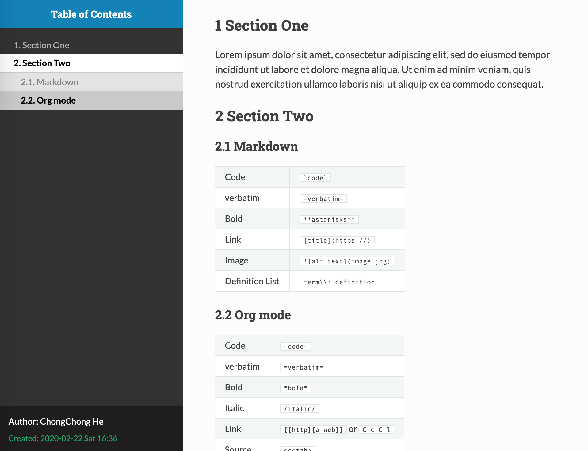
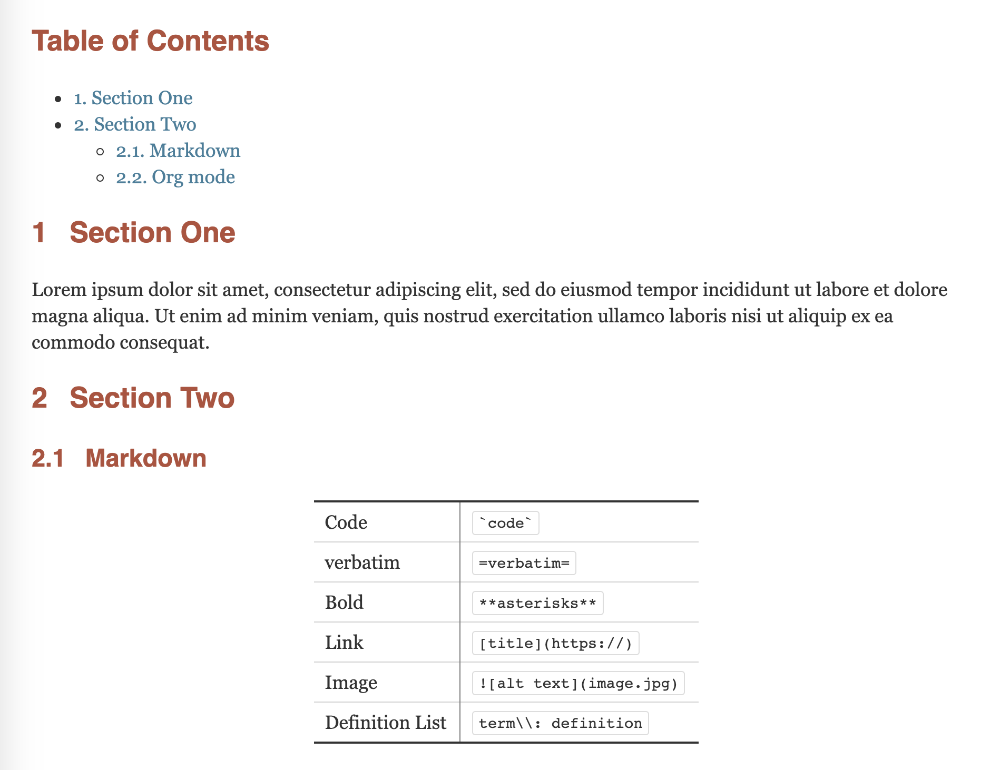
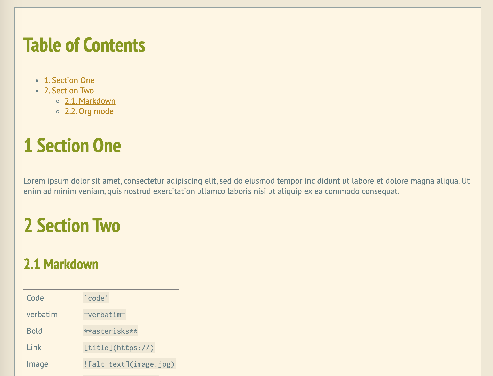
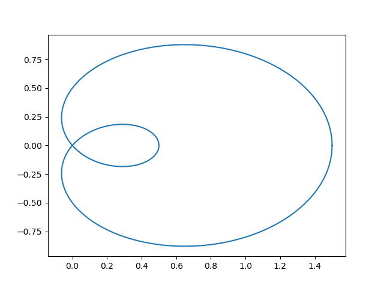

softwares
Table of Contents
- Emacs
- org-mode
- Git
- Typora
- Dropbox
Emacs
References:
- My (very long) .emacs: http://home.thep.lu.se/~karlf/emacs.html#sec-13-8
- https://orgmode.org/worg/org-tutorials/orgtutorial_dto.html
- David O'Toole Org tutorial: https://orgmode.org/worg/org-tutorials/orgtutorial_dto.html
- Org Mode - Organize Your Life In Plain Text!: http://doc.norang.ca/org-mode.html#AgendaSetup
- A Life Configuring Emacs
- https://pages.sachachua.com/.emacs.d/Sacha.html
Dot Emacs files
- One Dotfile to rule them all!
- dakrone-dotfiles: https://github.com/dakrone/dakrone-dotfiles/blob/master/emacs.org
- Juan José García Ripoll: http://juanjose.garciaripoll.com/blog/my-emacs-windows-configuration/index.html
How to get help?
Search for function
- http://ergoemacs.org/emacs/elisp_search_documentation.html
- To search command by name,
Alt+x apropos-command, orCtrl+h a.Ctrl+u Ctrl+h ato search both function and command names. - To search variable names,
Alt+x apropos-variable - To search all symbols space (commands, functions, variables, faces),
Alt+x apropos.
Get help
C-h i- An example: For more details on mode hooks, see the built-in Emacs manual node [(emacs) Hooks][1]. You can get there from Emacs via C-h i r m Hooks <enter>: C-h for help, i for info, r for read the manual, m for menu item, and Hooks to pick the menu item. (or you can follow the link above to see the html version).
- Find the key bindings for a command ("where-is")
- Find the command bound to a key sequence.
- Get detailed information about a command
- Get documentation of a minor mode
- Find what function is bound to a key sequence.
- For more help
A nice reference (dead)
Tips
- Find files
C-x C-ffor helm find filesSPC f Lto locate files anywhereSPC p fto find files in the current project (directory)
Installation
install emacs on Mac
$ brew update $ brew install emacs --with-cocoa $ brew linkapps emacs- Copy the first few lines of an old .emacs file, and restart emacs.
- [Install elpy][3]
- M-x package-refresh-contents
- M-x package-install RET elpy RET
- M-x package-install RET neotree RET
- [Install autopep8][4] `conda install -c conda-forge autopep8=1.3.2`
- Uncomment autopep8
- Copy other parts of the .emacs file
- Install spolsky theme
- Install sublime-themes using package-install
- add (require 'emacs-color-themes) to .init
- package install: markdown-mode
Follow ~/.emacs
magit: git integration
Use magit https://opensource.com/article/19/1/how-use-magit https://www.masteringemacs.org/article/introduction-magit-emacs-mode-git
Usage
- Check status:
M-x magit-status. See what's changed: TAB key.
LaTeX
I switched from vim-latex to Emacs + AUCTeX.
Tips
- AUCTeX Get help: C-h i d m AUCTeX RET
- siunitx — A comprehensive (SI) units package
Preview
- M-x preview-buffer
- C-c C-p C-p
- preview at point
Setups
Installed the following packages:
- AUCTeX (via Elpy)
- CDLaTeX
CDLaTeX
- Link: https://github.com/cdominik/cdlatex
- Get help: C-c ? (cdlatex-command-help)
Features
- Abbreviations. e.g. equ <TAB> inserts an equation enviroment.
- C-c ? (cdlatex-command-help) to list available abbreviations
- Math stemplates: fr<TAB>, lr(<TAB>
- Math symbols
- Typing `a to get α
- <TAB> to jump out of a group (paranthesis, $$, etc)
Bibtex
- reftex-citation: C-c [
- Auto-completion: Ret
Forward/inverse search
- Following
https://tex.stackexchange.com/questions/236366/emacsclient-issue-when-using-pdfsync-on-mac-os-x
- Skim:
- Preset: Custom
- Commmand: /usr/local/Cellar/emacs/26.1_1/bin/emacsclient
- Check for file changes: yes
- Reload automatically: no
- ~/.latexmkrc: setup compilation of latex.
Un-cat
About line wraping
- Line wrapping: to disable hard line wrapping, turn off
auto-fill-mode. M-x toggle-truncate-lines: toggle visual line wrap
Neotree
Open neotree dir M-x n-dir
Spell checking
Basics
- Get help: C-h w flyspell-mode
- correct words (using Ispell).
- Enable Flyspell mode, which highlights all misspelled words.
- Enable Flyspell mode for comments and strings only.
- Check spelling in an email message you are writing, checks the whole buffer, except for material that is indented or appears to be cited from other messages.
Hide show
- Add
#+STARTUP: showallto the beginning of a file to preset hide-show level. Available options are
#+STARTUP: overview #+STARTUP: content #+STARTUP: showall #+STARTUP: showeverything
Folding mode
Get help
- Refer to .emacs.d/pkgs/folding.el
- C-h f folding
Compose an email: C-x m
Send email:
Themes
I am using a modified version of the solarized-light theme (as of Mar
21, 2019). A backup of this theme file is in
~/Documents/computer/emacs/.
Change encoding (UTF-8, GB18030, etc)
Force Emacs to read a file in a specific encoding with
C-x RET c ENCODING RET C-x C-f
To reload the file with a named encoding, type
M-x revert-buffer-with-coding-system
shell
Multi-shell
C-u M-x shell ret ret
Switching to spacemacs
TODO
- M-q runs the command org-fill-paragraph (found in org-mode-map), which is an interactive compiled Lisp function in ‘org.el’.
Logs
-
- Starting to try spacemacs
-
- Abandoned it because mu4e won't work
-
- mu4e works as I fixed a bug in the init file
-
- Ref: https://www.spacemacs.org/layers/+emacs/org/README.html
- Tried org agenda and todo lists.
- Set projectile-file to ~/TODOs.org
- git cloned the deveper version of spacemacs. old one backed up to .emacs.d.sp.bk20200219. Ref: https://github.com/syl20bnr/spacemacs/issues/10434, commands:
https://github.com/syl20bnr/spacemacs/issues/10434 - copied the whole spacemacs project into bk_spacemacs. Reinstalled a brand new spacemacs
Emacs, change encoding (UTF-8, GB18030, etc)
Force Emacs to read a file in a specific encoding with
C-x RET c ENCODING RET C-x C-f.
To reload the file with a named encoding, type
M-x revert-buffer-with-coding-system
Ansi-term
Ref: https://www.masteringemacs.org/article/running-shells-in-emacs-overview
To switch between the two modes type C-c C-j to switch to line mode, and C-c C-k to switch to char mode. To save you from having to switch between modes for one-off commands you can use the alias C-c char which translates into C-x char.
Neotree
Shortcut (Only in Neotree Buffer)
- SPC or RET or TAB Open current item if it is a file. Fold/Unfold current item if it is a directory.
- U Go up a directory
- g Refresh
- A Maximize/Minimize the NeoTree Window
- H Toggle display hidden files
- C-c C-n Create a file or create a directory if filename ends with a ‘/’
- C-c C-d Delete a file or a directory.
- C-c C-r Rename a file or a directory.
- C-c C-c Change the root directory.
- C-c C-p Copy a file or a directory.
Debuggin
""" """problem- Disable smartparens package by adding
smartparensto the excluded-packages.
- Disable smartparens package by adding
org-mode
Tips
Easy templates
Reference. <s <TAB> expands to a ‘src’ code block. Pre-defined easy templates:
- s
#+BEGIN_SRC ... #+END_SRC - e
#+BEGIN_EXAMPLE ... #+END_EXAMPLE - q
#+BEGIN_QUOTE ... #+END_QUOTE
Key-bindings
TODO and agenda
C-c / (org-sparse-tree)- Create a sparse tree, prompt for details (TODO entries, search expression, deadlines before/after a data)
C-c / t (org-show-todo-tree)- View TODO items in a sparse tree
Auto-update chrome
#!/bin/bash fswatch -o index.html | xargs -n1 -I {} osascript -e 'tell application "Google Chrome" to tell the active tab of its first window to reload'
Include files
During export, you can include the content of another file:
#+INCLUDE: "./code/prime_mp.py" src python
Quick template
#+SETUPFILE: https://fniessen.github.io/org-html-themes/setup/theme-readtheorg.setup #+STARTUP: overview #+TITLE: Title #+AUTHOR: Chong-Chong He #+OPTIONS: toc:nil num:nil #+STARTUP: inlineimages showall # #+STARTUP: noinlineimages
Learning resources
- Using emacs 26, by Mike Zamansky
Basics and shortcuts
- Insert inline code
~code~- Easy templates
<s TABexpands to a ‘src’ code block.- TODO
C-c C-tto toggle TODO.- [ ]to create a checkbox and useC-c C-cto toggle state.- Subscripts and superscripts
^and_, surrounded by{}.C-c C-x \will format sub- and superscripts in a WYSIWYM way
A list of org themes
Use online CSS styles by adding a line of code in the beginning of
your org file and export to html via C-c C-e h o.
readtheorg
https://github.com/fniessen/org-html-themes
#+SETUPFILE: https://fniessen.github.io/org-html-themes/setup/theme-readtheorg.setup

org CSS
https://github.com/gongzhitaao/orgcss
#+HTML_HEAD: <link rel="stylesheet" type="text/css" href="https://gongzhitaao.org/orgcss/org.css"/>

Solarized CSS
http://thomasf.github.io/solarized-css/
#+HTML_HEAD: <link rel="stylesheet" type="text/css" href="http://thomasf.github.io/solarized-css/solarized-light.min.css" /> #+HTML_HEAD: <link rel="stylesheet" type="text/css" href="http://thomasf.github.io/solarized-css/solarized-dark.min.css" />

dakrone/eos
https://github.com/dakrone/eos
#+SETUPFILE: /Users/chongchonghe/Documents/computer/emacs/org_export/eos/default.setup
Easy templates
Org export
Math formatting in HTML export: https://orgmode.org/manual/Math-formatting-in-HTML-export.html
Some settings
- Disable _ and ^ as under and superscipts when exporting
- using the menus Org -> Customize -> Browse Org Group. To update
the default behavior for subscripts & superscripts, choose:
- Group Org Export -> Group Org Export General -> Option Org Export With Sub Superscripts -> Curly brackets or Do not interpret them
- Reference
- using the menus Org -> Customize -> Browse Org Group. To update
the default behavior for subscripts & superscripts, choose:
Math, newcommands
Following https://github.com/bcw/org-tex-define.
Put a file with the following content to somewhere
# -*- mode: org -*- #+MACRO: when-fmt (eval (when (org-export-derived-backend-p org-export-current-backend '$1) "$2")) #+MACRO: preamble {{{when-fmt(html,\\($1\\))}}}{{{when-fmt(latex,\n#+LATEX_HEADER: $1\n)}}} #+MACRO: def {{{preamble(\\def$1{$2})}}} #+MACRO: newcommand {{{preamble(\\newcommand{$1}$3{$2})}}} #+MACRO: renewcommand {{{preamble(\\renewcommand{$1}$3{$2})}}} #+MACRO: newenvironment {{{preamble(\\newenvironment{$1}$4{$2}{$3})}}} #+MACRO: renewenvironment {{{preamble(\\renewenvironment{$1}$4{$2}{$3})}}}
and put the following near the beginning of your .org file:
#+SETUPFILE: path/to/define.setup
Some commonly used commands:
\newcommand{\e}[1]{\times 10^{#1}} \def\dif{\times 10^{#1}} % may conflict with physics package, so I use \def here
and their correspondent org preamble:
{{{newcommand(\\e,\\times 10^{#1},[1])}}} {{{def(\\dif,\\textrm{d})}}}
Org babel
Old: spacemacs
I installed the package ess in .spacemacs.d/addons, and enabled julia in org-babel under org-babel-do-load-languages, which also enabled julia-mode.
Python
Session mode example
a = 'hello' a
hello
a + ' you'
hello you
Non-session mode example
First block:
a = 'hello' return a
hello
Second block: will error out: 'a is not defined'
return a
Display figure
Tags:
results fileput results into[[file:#1]]and display inline imagecache: yesonly execute if code has changedexports: bothfor html export
import numpy as np import matplotlib.pyplot as plt N = 400 t = np.linspace(0, 2 * np.pi, N) r = 0.5 + np.cos(t) x, y = r * np.cos(t), r * np.sin(t) fig, ax = plt.subplots() ax.plot(x, y) fn = "attach/f1.png" plt.savefig(fn) return fn

Shell
- e.g. 1
python zoomin/src/main_imf.py 2> /dev/null
Org agenda, tasks
A good reference: https://vincent.demeester.fr/articles/my_organizational_workflow.html
Org publish
A typical publish.el:
(require 'ox-publish) (setq org-publish-project-alist '(("body" :base-directory "." :base-extension "org" :publishing-directory "." :recursive t :section-numbers nil :table-of-contents nil :publishing-function org-html-publish-to-html :auto-sitemap nil) ("all" :components ("body"))))
Usage: to publish a file or project, move to the end of the first line and press C-x C-e to load org-publish. Now go to the end of the last line and press C-x C-e again. Finally, M-x org-publish-project RET all RET to publish.
Git
Install git from source
https://git-scm.com/book/en/v2/Getting-Started-Installing-Git
- Download from https://www.kernel.org/pub/software/scm/git/
- tar xf git\*.tar.xz, cd git\*
- make configure
- ./configure —prefix=/path
- Make && make install
git https without password
Following https://stackoverflow.com/questions/5343068/is-there-a-way-to-skip-password-typing-when-using-https-on-github, the answer of Alwar.
git config --global credential.helper store
Connect two computers
Make ssh work without password on all platforms.
On the server (say, your desktop), create the Master branch:
mkdir test.gitcd test.gitgit init --bare(create a bare git repo as the server)
On client1, (say, your laptop):
- (optional)
git config —global user.name "<a name>" - (optional)
git config —global user.email "<your email>" - (optional, set the default editor to nano)
git config —global core.editor nano git clone your_name@machine_name.astro.umd.edu:/path/to/test.git- (Work in this folder, move all files here)
git add .git commit -m "initial commit"git push origin master
On client2, repeat what you did on client1.
work with JetBrains family softwars
- (on desktop) git init —bare
- (On laptop, e.g. CLion) git clone "st:work.git"
git diff
- See unstaged changes:
git diff - See staged changes:
git diff --staged - Staged and unstaged changes:
git diff HEAD
Tips
- Compare a file with its MASTER version
- Use vim:
git difftool master filename
- Use vim:
- Hard retrieve to last commit: ?
- Copy an old version of a file and name it as
old_main.cppgit show HEAD^:main.cpp > old_main.cpp- https://stackoverflow.com/questions/888414/git-checkout-older-revision-of-a-file-under-a-new-name
Find out the url a git repository is cloned from
git remote show origin- Discarding a local file
- https://docs.gitlab.com/ee/topics/git/numerous_undo_possibilities_in_git/
Discarding local changes (permanently) to a file:
git checkout -- <file>Discard all local changes to all files permanently:
git reset --hardgit clean -f -dRemove a file from git after adding it to gitignore:
git rm --cached <file>thengit add -Aandgit commit- Find and remove from git:
find . -name .DS_Store -print0 | xargs -0 git rm -f --ignore-unmatch, thengit add -Aand git commit. Ref
Trouble shooting
- “Pulling without specifying how to reconcile divergent branches is discouraged”
- Do as the message suggested:
git config pull.ff onlyto make it automatically merge only when fast-foward. - Git warning: Pulling without specifying how to reconcile divergent branches i…
- stackoverflow
- Do as the message suggested:
Typora
Dropbox
- How to set a Dropbox file or folder to be ignored
xattr -w com.dropbox.ignored 1 /Users/yourname/Dropbox\ \(Personal\)/YourFileName.pdf